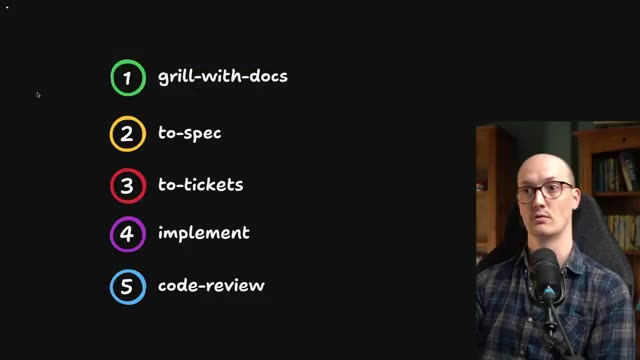
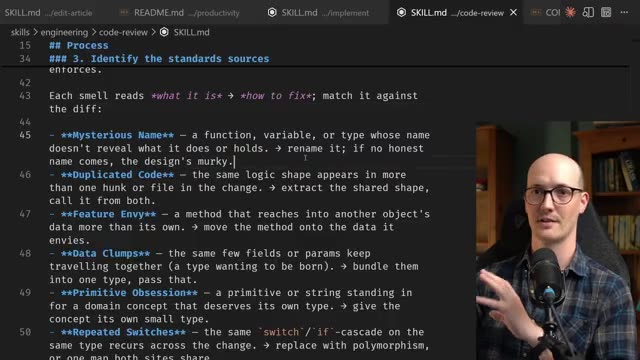
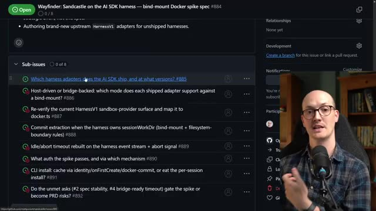

Конспект видео · Matt Pocock · 2026-07-08 · 15 мин Video digest · Matt Pocock · 2026-07-08 · 15 min
Скиллы v1.1: /wayfinder, /research, /implement — полный цикл разработки с агентом Skills v1.1: /wayfinder, /research, /implement — a full agent development cycle
Смотреть видео ↗Watch the video ↗
Матт Покок (создатель Total TypeScript, теперь один из самых методичных авторов по агентной разработке) выпустил v1.1 своего открытого репозитория скиллов. Релиз превращает набор разрозненных приёмов в полный жизненный цикл разработки с агентом, и его стоит разобрать как целостный метод — от размытой идеи до закоммиченного кода [00:00]. Matt Pocock (creator of Total TypeScript, now one of the most methodical voices on agentic development) shipped v1.1 of his open skills repo. The release turns a set of scattered techniques into a complete agent-driven development lifecycle, worth unpacking as one method — from a fuzzy idea to committed code [00:00].
Метод: пять шагов вместо plan modeThe method: five steps instead of plan mode
Основной поток такой: вместо плана агент сначала «гриллит» вас — задаёт вопросы по одному, собирая глоссарий и архитектурные решения в документы (/grill-with-docs). Из этих документов рождается спецификация (/to-spec — переименован из /to-prd: «мы создавали не PRD, а спеку» [01:03]), спека нарезается на тикеты размером в одну агентную сессию (/to-tickets), каждый тикет выполняется скиллом /implement — «TDD на заранее согласованных швах, тайпчек регулярно, полный прогон тестов один раз в конце» [04:58] — и завершается ревью и коммитом [04:27]. The main flow: instead of plan mode, the agent first "grills" you — asking questions one at a time while capturing a glossary and architecture decisions into docs (/grill-with-docs). Those docs become a spec (/to-spec — renamed from /to-prd: "what we were creating wasn't a PRD, it was a spec" [01:03]), the spec is sliced into tickets sized to one agent session each (/to-tickets), every ticket is executed by /implement — "TDD at pre-agreed seams, type checks regularly, one full test sweep at the end" [04:58] — and finished with review and a commit [04:27].

Гриллинг в v1.1 стал надёжнее за счёт трёх точечных правок: объяснено, почему вопросы задаются строго по одному; добавлен «шлюз подтверждения» («не приступай к реализации, пока я не подтвержу общее понимание» — модели повадились перескакивать из вопросов прямо в код); и введено различие фактов и решений: факты агент добывает сам из кодовой базы, решения принимает только человек — без этого разграничения агент, особенно Fable, иногда «гриллил сам себя» [02:31]. Grilling got more reliable in v1.1 via three surgical fixes: the skill now explains why questions come strictly one at a time; a confirmation gate was added ("do not enact the plan until I confirm shared understanding" — models had a habit of jumping from questions straight into code); and a distinction between facts and decisions: facts the agent digs out of the codebase itself, decisions belong to the human — without that split the agent, Fable especially, would occasionally "grill itself" [02:31].
Код-ревью по «запахам» ФаулераCode review via Fowler's smells
Скилл /code-review работает двумя параллельными субагентами-осями: первая проверяет соответствие кодстандартам репозитория (Покок советует держать их отдельным файлом, не в agents.md), вторая — соответствие исходной спеке [05:56]. Новинка v1.1 — список «запахов кода» из классического «Рефакторинга» Мартина Фаулера: mysterious name, duplicated code, feature envy, data clumps, message chains… Книга настолько глубоко в обучающих данных, что достаточно назвать запах одной строкой — и агент начинает сам находить и называть их в дифе: «нашёл message chains — уберу». Автор тестировал пару недель: «возмутительно полезно» при цене ~10 строк в скилле [06:58]. The /code-review skill runs two parallel subagent axes: one checks the repo's documented coding standards (Pocock keeps them in a separate file, not agents.md), the other checks conformance to the originating spec [05:56]. New in v1.1 is a list of code smells from Martin Fowler's classic "Refactoring": mysterious name, duplicated code, feature envy, data clumps, message chains… The book sits so deep in the training data that naming a smell in one line is enough — the agent starts spotting and naming them in the diff: "found message chains, removing them." After two weeks of testing: "outrageously useful" at the cost of ~10 lines in the skill [06:58].

Wayfinder: карта для идей, не влезающих в одну сессиюWayfinder: a map for ideas too big for one session
Главная новинка — /wayfinder, замена гриллингу для случаев, когда «идея пришла размытой и слишком большой для одной агентной сессии: путь к цели ещё не виден» [07:57]. Скилл строит общую карту в трекере (GitHub issues): главный issue — карта, под-issues — решения, которые предстоит принять, с блокирующими связями между ними. Каждый под-issue скроен под размер одной сессии и типизирован: research (агент уходит «в фон» и возвращается с фактами), grilling (нужен диалог с человеком), prototype (дешёвый черновик UI или логики — «поднять точность обсуждения конкретным артефактом», обязателен для фронтенда) и task (скучная ручная работа вроде доступов) [09:32]. Закрывая тикеты один за другим, вы наполняете карту решениями — а когда туман рассеялся, карта обычным путём превращается в спеку. Бонус: всё живёт в GitHub, а значит — переживает сессии и доступно команде [11:01]. The headline feature is /wayfinder, replacing grilling when "a loose idea has arrived, too big for one agent session and wrapped in fog: the way to the destination isn't visible yet" [07:57]. The skill charts a shared map in the tracker (GitHub issues): a parent issue is the map, sub-issues are the decisions still to be made, with blocking relationships between them. Each sub-issue is scoped to one session and typed: research (an AFK background task returning facts), grilling (needs a human dialogue), prototype (a cheap rough artifact of UI or logic — "raise the fidelity of the discussion," essential for frontend work), and task (boring manual work like provisioning) [09:32]. Closing tickets one by one fills the map with decisions — and once the fog clears, the map becomes a spec the usual way. Bonus: it all lives in GitHub, so it survives sessions and is shareable with a team [11:01].

В поддержку добавлены компактные /research (фоновый агент исследует вопрос по первоисточникам и складывает заметку в принятое в репозитории место) и /prototype (выбор: прототип логики или UI) [11:29]. Общий вывод: ценность репозитория Покока не в конкретных файлах, а в декомпозиции работы с агентом на воспроизводимые этапы, каждый из которых умещается в «зону ума» одной сессии — тот же принцип, что двигает наш собственный пайплайн. Supporting them are the compact /research (a background agent investigates a question against primary sources and saves a note where the repo keeps such notes) and /prototype (choose: logic or UI prototype) [11:29]. The broader takeaway: the value of Pocock's repo isn't the specific files but the decomposition of agent work into reproducible stages, each fitting the "smart zone" of a single session — the same principle behind our own pipeline.
Конспект построен по субтитрам; кадры извлечены по таймкодам, отобранным из транскрипта. Digest built from subtitles; frames extracted at timestamps picked from the transcript.